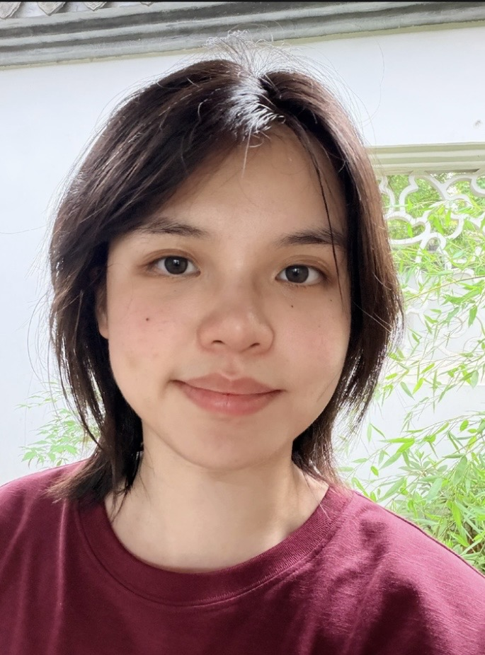

Wenyi Lian
PhD Student in Machine Learning
Uppsala University
Uppsala · Sweden
About
I am a PhD student in Machine Learning at the Division of Systems and Control, Uppsala University. My supervisors are Thomas B. Schön (main), Zheng Zhao, and Ekta Vats.
Broadly, I am interested in Machine Learning, Computer Vision, and Multimodal Learning. My recent research focuses on post-training and inference-time algorithms for foundation generative models, particularly diffusion and flow-matching models for controllable image generation.
Before starting my PhD, I received an MSc in Image Analysis and Machine Learning from Uppsala University, specialising in Medical Image Analysis, and a BEng in Computer Science and Technology from Chengdu University of Information Technology.
Outside research, I like reading, particularly detective fiction, books on metacognition, and Japanese literature. I also like poker, table tennis, and fishkeeping.
Research
Publications
- 2026Test-Time Scaling of Text-to-Image Flow Matching Models with Noise-Rejuvenated Sequential Monte Carlo
Preprint, under review.
- 2025
- 2024
- 2024
- 2023
- 2023
- 2022
Academia
Teaching
Teaching Assistant, Uppsala University
Deep Learning · Database Design I
Teaching Assistant, Chengdu University of Information Technology
C Language Programming · Foundations of Computer Science